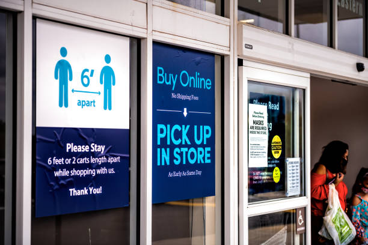

Crosscredit is a leading financial institution which enables customers to take control of their financial situation and to reap additional benefits from their credit facilities. This project was carried out with the aid of PowerBI to gain further insights on their customer credit data such as customer credit history, repayment history, the period of the credit history among others. The result of this analysis would be used to assist their customers in debt management, improving the security features of the cards, and most importantly, to improve the credit score of the customer. This led to an increase customer satisfaction and retention by 15%.
Sunshine Resort is a 5 star hotel located in the heart of Seychelles. It is a home to many foreigners from around the world who want to get lost in the beautiful Islands for a short period of time. As part of Sunshine's resort commitment to excellence, the management decided to explore more ways to boost customer satisfaction. This was carried out with the utilisation of Microsoft Excel through scouting the customer reservation data which were categorized by their country of origin, type of hotel booked, the average number of days among other information. To address the situation, an analysis was performed to address the rootcause of the issues. At the end of the analysis, the average Net Performer Score rating of the customers' experience 7 (passive) to 9 (promoter). This also led to a significant increase in the number of reservations and the revenue generated

Jumia Tech is a popular E-commerce company which bridges the gap between the Vendor and the consumer through the internet. It operates mainly within the Sub-sahara region, with over 32 locations.It serves both as an in-store pick-up and as a delivery service, depending on the customer's convenience. In a bid to curb the covid 19 pandemic, a gap analysis was performed to analyse the current state of its pick-up service and to create a desired future state that would be implemented to ensure that Jumia Tech is observing the covid 19 protocols. This analysis was carried out using a process flowchart with the aid of the 'draw.io' online tool. This process tackled the spread of the covid-19 pandemic and reduced cycle time, which improved the efficiency of its pick-up service by 12%

Vancouver group of companies is an enterprise that retails a wide range of products from home appliances to office supplies. Recently, the management has decided to look into their database system to understand the company's operation in detail. This was to ensure informed data-making decisions. Using Structured Query Language aka SQL, I was able to extract the required data to gain actionable insights about the Vancouver operations. From the first query that was done, I was able to deduce the number of categories that Vancouver group of companies retailed . A total of 5 rows were returned which are Public Area, Furnishing, Housekeeping, Maintenace and Office supplies. Their average prices for each category were rounded up to 2 decimal places. The "AVG" and "ORDER BY" functions were used to achieve this. In the second query, the goal was to classify the incomes into 3 categories which were Small Income (less than 100), Mid Income (between 100 and 200) and Large Income (between 200 and 300). This returned the 5000 rows with the various categories using the "WHEN" AND "INNER JOIN" functions.
The employees of Unilever, UK are currently faced with a challenge. Their canteen cannot accommodate their
staff strength of 1500, during their preferred break time between 12pm-1pm. This has also impacted their
effectiveness at work as they would have to spend a lot of time between getting their orders done and returning to
their workstation.
The time required for employees to go to the canteen and return to their workstation typically takes 60mins, although the significant time spent during eating is approximately 15mins. This means that 75% of their break time is wasted commuting to and from the canteen. Employees waste a lot of time on the queue to make their order, get a seat and eat. To that effect,a large portion of the unpurchased cooked meals goes to waste because employees were unable to order their preferred meal. To tackle this issue, an Automated Ordering System has been proposed through a business case to show the management and to seek for approval of funds in order to improve the process of the staff
ordering their preferred meal before time, getting it delivered to them at their convenient time. The business case highlights key benefits which are: effective food delivery, an efficient use of their breaktime, a reduction of food wastage, elimination of queues, reduced stress among others. This project improved employee efficiency by 20 percent and brought about employee satisfaction.
Established over 15 years ago, JETBLUE airline has evolved into a prominent player in the aviation industry.It operates an extensive network of domestic and international routes, connecting travelers to major cities and unique destinations worldwide. Despite having experience in data analytics, I discovered that there was no integration of data as the airline was unable to retrieve specific aircraft details, like route and seating capacity, from a single report. Instead, they had to open multiple files and manually compare the information. With the information I retrieved, I was able to analyze the data and present key insights to drive business growth and enhance the company's position in the industry using Tableau.
 A new clothing and accessories store is being established and designed to cater to the fashion-forward young demographic. This store will feature the latest trends in apparel, footwear, and accessories, providing a vibrant and dynamic shopping experience both in-store and online. To ensure the functional requirements of the online shopping experience were fully understood, I employed the use of a Use Case diagram to make sure the business stakeholders and the developers were clear on the expectations of the website. The primary actor, which is the customer in this case, initiates the website usage while the secondary actors react after the actions of the primary actor has been performed. The Use Case diagram is highly useful for the visualization of the functional requirements, as well as highlighting the relationship and interactions between the actors and the retail system.
A new clothing and accessories store is being established and designed to cater to the fashion-forward young demographic. This store will feature the latest trends in apparel, footwear, and accessories, providing a vibrant and dynamic shopping experience both in-store and online. To ensure the functional requirements of the online shopping experience were fully understood, I employed the use of a Use Case diagram to make sure the business stakeholders and the developers were clear on the expectations of the website. The primary actor, which is the customer in this case, initiates the website usage while the secondary actors react after the actions of the primary actor has been performed. The Use Case diagram is highly useful for the visualization of the functional requirements, as well as highlighting the relationship and interactions between the actors and the retail system.